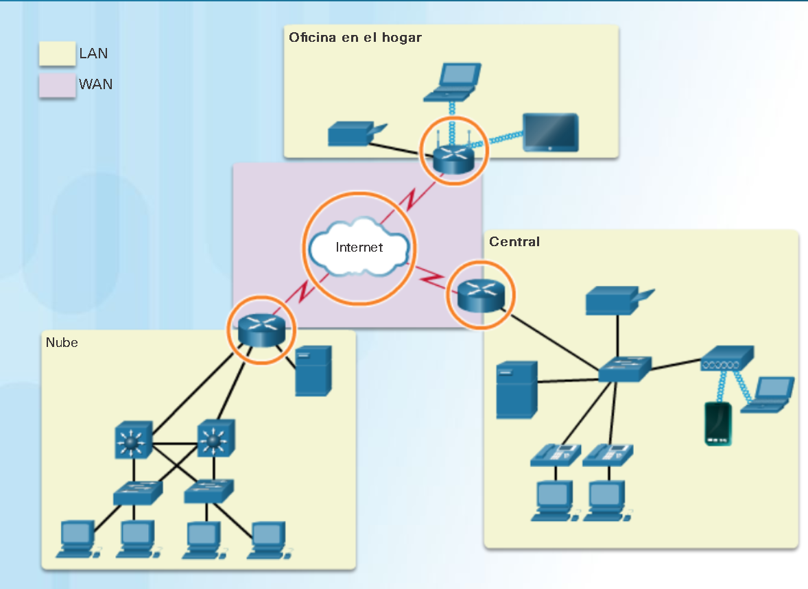
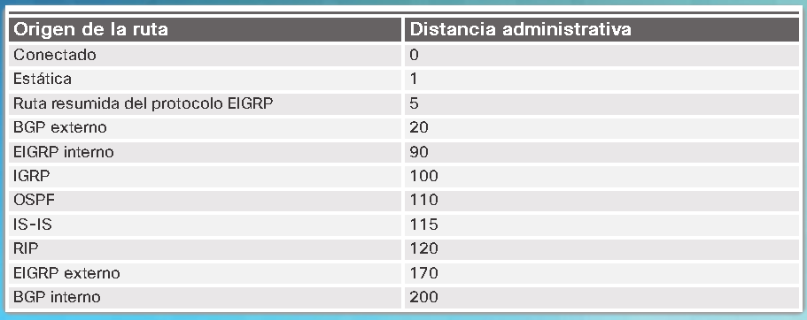

Conceptos de routing.
Las redes permiten que las personas se comuniquen, colaboren e interactúen de muchas maneras. Las redes se usan para acceder a páginas web, hablar mediante teléfonos IP, participar en videoconferencias, competir en juegos
interactivos, realizar compras en Internet, completar trabajos de cursos en línea y más.
Los switcher Ethernet funcionan en la capa de enlace de datos, la capa2, y se utilizan para reenviar tramas de Ethernet entre los dispositivos dentro de una misma red.
Sin embargo, cuando las direcciones IP de origen y destino están en distintas redes la trama de Ethernet se debe enviar a un router.
Los routers conectan una red a otra red. El router es respondable de la entrada de paquetes a través de distintas redse. El destino de un paquete IP puede ser un servidor web en otro país o un servidor de correo electrónico
en la red de área local.
El router usa su tabla de routing para encontrar la mejor ruta para reenviar un paquete. Es responsabilidad de los router entregar esos paquetes a su debido tiempo. La efectividad de las comunicaciones de internetwork depende,
en gran medida, de la capacidad de los routers de reenviar paquetes de la manera mñas eficiente posible.
Cuando un host envía un paquete a un dispositivo en una red IP diferente, el paquete se reenvia al gateway predeterminado, ya que los dispositivos host no pueden comunicarse directamente con los dispositivos que están fuera de la
red local. El gateway predeterminado es el destino que enruta el tráfico desde la red local hacia los dispositivos en las redes remotas. Con frecuencia, se utiliza para conectar una red local a Internet.
En este capítulo, se responde a la pregunta "¿Qué hace un router cuando recibe un paquete desde una red que está destinada a otra red?" Se examinarán los detalles de la tabla de routing, incluidas las rutas conectadas, estáticas y dinámicas.
Debido a que los routers pueden enrutar paquetes entre las redes, los dispositivos que están en redes distintas se pueden comunicar. En este capítulo, se presentará un router, su función en las redes, sus principales componentes de hardware y software
y el proceso de routing. Se proporcionarán ejercicios que demuestran cómo acceder al router, cómo configurar los parámetros básicos del router y cómo verificar la configuración.
Actividad: ¿Realmente necesitamos un mapa?
En esta actividad de creación de modelos, deberá buscar indicaciones para trasladarse de origen a destino. El propósito es comparar esos tipos de indicaciones con las direcciones de routing de red.
Situación
Mediante el uso de Internet y Google Maps, cuyo sitio es http://maps.google.com, busque una ruta entre la ciudad capital de su país y otra ciudad alejada, o entre dos lugares dentro de su propia ciudad. Preste mucha atención a las indicaciones que sugiere Google Maps para ir en automóvil o a pie. Tenga en cuenta que, en muchos casos, Google Maps sugiere más de una ruta entre las dos ubicaciones que usted eligió. También le permite especificar restricciones adicionales para la ruta, como evitar autopistas o peajes. Para esta actividad, copie las indicaciones de al menos dos rutas distintas que le sugiera Google Maps. Copie las rutas en un documento de procesamiento de textos y guárdelo para utilizarlo en el siguiente paso. Abra el .pdf que acompaña esta actividad de creación de modelos y complételo con un compañero de curso. Analice las preguntas de reflexión incluidas en el .pdf y registre las respuestas. Esté preparado para presentar sus respuestas a la clase.Instrucciones de la actividad de clase: ¿Realmente necesitamos un mapa?
Características de una red.
Las redes tuvieron un impacto considerable en nuestras vidas. Estas cambiaron la forma en que vivimos, trabajamos y jugamos. Las redes nos permiten comunicarnos, colaborar e interactuar como nunca antes. Utilizamos la red de distintas formas, entre ellas las aplicaciones web, la telefonía IP, la videoconferencia, los juegos interactivos, el comercio electrónico, la educación y más. Como se muestra en la ilustración, existen muchas características clave relacionadas con las estructuras y el rendimiento a las cuales nos referimos cuando hablamos de redes:
- Topología: existen topologías físicas y lógicas. La topología física es la disposición de los cables, los dispositivos de red y los sistemas finales. Esta describe la forma en que los dispositivos de red se interconectan con los hilos y cables. La topología lógica es la ruta por la cual se transfieren los datos en una red. Describe cómo aparecen conectados los dispositivos de red a los usuarios de la red.
- Velocidad: la velocidad mide la velocidad de datos de un enlace dado en la red en bits por segundo (b/s).
- Costo: el costo indica el gasto general de la adquisición de componentes de red, así como de la instalación y el mantenimiento de la red.
- Seguridad: la seguridad indica el nivel de protección de la red, incluida la información que se transmite a través de esta. El tema de la seguridad es importante, y las técnicas y las prácticas están en constante evolución. Siempre tenga en cuenta la seguridad cuando se tomen medidas que afecten la red.
- Disponibilidad: la disponibilidad es la probabilidad de que la red esté disponible para ser utilizada cuando resulte necesario.
- Escalabilidad: la escalabilidad indica la facilidad con la que la red puede admitir más usuarios y requisitos de transmisión de datos. Si un diseño de red está optimizado para cumplir solo con los requisitos actuales, puede resultar muy difícil y costoso satisfacer nuevas necesidades cuando la red crezca.
- Confiabilidad: la confiabilidad indica la fiabilidad de los componentes que crean la red, como los routers, los switches, las computadoras y los servidores. A menudo, la confiabilidad se mide como la probabilidad de fallas o como el tiempo medio entre fallas (MTBF).
Estas características y atributos proporcionan un medio para comparar distintas soluciones de redes. Nota: si bien el término “velocidad” se utiliza comúnmente para referirse al ancho de banda de red, no es del todo preciso. La velocidad propiamente dicha a la que se transmiten los bits no varía en el mismo medio. La diferencia en el ancho de banda se debe a la cantidad de bits transmitidos por segundo, no a la velocidad a la que se trasladan a través del medio cableado o inalámbrico.
¿Por qué es necesario el routing?
¿Cómo es que se logra acceder a la información deseada en pocos segundos haciendo clic en un enlace en un navegador web? Si bien existen muchos dispositivos y tecnologías que trabajan juntos de forma colaborativa para lograr esto, el dispositivo principal es el router. En pocas palabras, un router conecta una red con otra red.
La comunicación entre redes no sería posible sin un router que determine la mejor ruta hacia el destino y que reenvíe el tráfico al router siguiente en esa ruta. El router es responsable del routing del tráfico entre redes.
En la topología de la figura, los routers interconectan las redes en los diferentes sitios. Cuando un paquete llega a una interfaz del router, este utiliza la tabla de routing para determinar cómo llegar a la red de destino. El destino de un paquete IP puede ser un servidor web en otro país o un servidor de correo electrónico en la red de área local.
Es responsabilidad de los routers entregar esos paquetes de forma eficaz. La efectividad de las comunicaciones de internetwork depende, en gran medida, de la capacidad de los routers de reenviar paquetes de la manera más eficiente posible.

Los router son computadoras.
Para que la mayoría de los dispositivos con capacidad de red funcionen (por ejemplo, las computadoras, las tabletas y los smartphones), estos requieren los siguientes componentes, como se muestra en la Figura 1:
- Unidad central de procesamiento (CPU)
- Sistema operativo (OS)
- Memoria y almacenamiento (RAM, ROM, NVRAM, flash, disco duro)


Los router interconectan redes.
La mayoría de los usuarios desconocen la presencia de varios routers en su propia red o en Internet. Los usuarios esperan poder acceder a páginas web, enviar correo electrónico y descargar música, sin importar si el servidor al que acceden está en su propia red o en otra. Los profesionales de redes saben que
es el router el que se encarga del reenvío de paquetes de una red a otra, desde el origen inicial hasta el destino final.
Un router conecta varias redes, lo que significa que posee varias interfaces, cada una de las cuales pertenece una red IP diferente. Cuando un router recibe un paquete IP en una interfaz, determina qué interfaz debe usar para reenviar el paquete hacia el destino. La interfaz que usa el router para reenviar el
paquete puede ser el destino final o una red conectada a otro router que se usa para llegar a la red de destino.
En la animación de la figura 1, se observa que el R1 y el R2 son responsables de recibir el paquete en una red y reenviarlo desde otra red hacia la red de destino.
Generalmente, cada red a la que se conecta un router requiere una interfaz separada. Estas interfaces se usan para conectar una combinación de redes de área local (LAN) y redes de área extensa (WAN). Por lo general, las LAN son redes Ethernet que contienen dispositivos como computadoras, impresoras y servidores.
Las WAN se usan para conectar redes a través de un área geográfica extensa. Por ejemplo, las conexiones WAN suelen utilizarse para conectar una LAN a la red del proveedor de servicios de Internet (ISP).
Observe que cada sitio de la figura 2 requiere el uso de un router para interconectarse a otros sitios. Incluso la oficina doméstica requiere un router. En esta topología, el router ubicado en la oficina doméstica es un dispositivo especializado que lleva a cabo varios servicios para la red doméstica.

Mecanismos de reenvio de paquetes.
Los routers admiten tres mecanismos de reenvío de pquetes:
- Switching de procesos: es un mecanismo de reenvío de paquetes más antiguo que todavía está disponible para los routers Cisco. Cuando un paquete llega a una interfaz, se reenvía al plano de control, donde la CPU hace coincidir la dirección de destino con una entrada de la tabla de routing y, a continuación, determina la interfaz de salida y reenvía el paquete. Es importante comprender que el router hace esto con cada paquete, incluso si el destino es el mismo para un flujo de paquetes. Este mecanismo de switching de procesos es muy lento y rara vez se implementa en las redes modernas.
- Switching rápido: este es un mecanismo frecuente de reenvío de paquetes que usa una memoria caché de switching rápido para almacenar la información de siguiente salto. Cuando un paquete llega a una interfaz, se reenvía al plano de control, donde la CPU busca una coincidencia en la caché de switching rápido. Si no encuentra ninguna, se aplica el switching de procesos al paquete, y este se reenvía a la interfaz de salida. La información de flujo del paquete también se almacena en la caché de switching rápido. Si otro paquete con el mismo destino llega a una interfaz, se vuelve a utilizar la información de siguiente salto de la caché sin intervención de la CPU.
- Cisco Express Forwarding (CEF): CEF es el mecanismo de reenvío de paquetes más reciente y más utilizado del IOS de Cisco. Al igual que el switching rápido, CEF arma una base de información de reenvío (FIB) y una tabla de adyacencia. Sin embargo, las entradas de la tabla no se activan por los paquetes como en el switching rápido, sino que se activan por los cambios, como cuando se modifica un elemento en la topología de la red. Por lo tanto, cuando se converge una red, la FIB y las tablas de adyacencia contienen toda la información que el router debe tener en cuenta al reenviar un paquete. La FIB contiene búsquedas inversas calculadas previamente, información de siguiente salto para las rutas, incluida la información de interfaz y de capa 2. Cisco Express Forwarding es el mecanismo de reenvío más rápido y la opción más utilizada en los routers Cisco.
- El switching de procesos resuelve un problema realizando todos los cálculos matemáticos, incluso si los problemas son idénticos.
- El switching rápido resuelve un problema realizando todos los cálculos matemáticos una vez y recuerda la respuesta para los problemas posteriores idénticos.
- CEF soluciona todos los problemas posibles antes de tiempo en una hoja de cálculo.


Actividad (Parte 1): Identificar los tipos de memoria del router.

Actividad (parte 2): Identificar componentes del router.

Packet Tracer: Uso de traceroute para detectar la red.
PT: Uso de traceroute para detectar la red (Instrucciones)
PT: Uso de traceroute para detectar la red (PKA)
Práctica de laboratorio: Realización de un esquema de Internet.
Realización de un esquema de Internet.
Conexión a una red.
Por lo general, los dispositivos de red y los usuarios finales se conectan a una red mediante una conexión Ethernet por cable o una conexión inalámbrica. Consulte la ilustración para ver un ejemplo de topología de referencia.
Las LAN que se muestran en la ilustración sirven como ejemplo de cómo los usuarios y los dispositivos de red pueden conectarse a las redes.
Los dispositivos de la oficina doméstica pueden conectarse de la siguiente manera:
- Las computadoras portátiles y las tablet PC se conectan de forma inalámbrica a un router doméstico.
- Una impresora de red se conecta mediante un cable Ethernet al puerto de switch en el router doméstico.
- El router doméstico se conecta al cable módem del proveedor de servicios mediante un cable Ethernet.
- El cable módem se conecta a la red del proveedor de servicios de Internet (ISP)
- Los recursos corporativos (es decir, los servidores de archivos y las impresoras) se conectan a los switches de capa 2 mediante cables Ethernet.
- Las computadoras de escritorio y los teléfonos de voz sobre IP (VoIP) se conectan a los switches de capa2 mediante cables Ethernet.
- Las computadoras portátiles y los smartphones se conectan de forma inalámbrica a los puntos de acceso inalámbrico. (WAP)
- Los WAP se conectan a los switches mediante cables Ethernet.
- Los switches de capa 2 se conectan a una interfaz Ethernet en el router perimetral mediante cables Ethernet. Un router perimetral es un dispositivo que se encuentra en el perímetro o el límite de una red y crea rutas entre esa red y otra red, por ejemplo, entra una LAN y una WAN.
- El router perimetral se conecta al proveedor de servicios (SP) de una WAN.
- El router perimetral también se conecta a un ISP para propósitos de respaldo
- Las computadoras de escritorio y los teléfonosVoIP se conectan a los switches de capa 2 mediante cables Ethernet.
- Los switches de capa 2 se conectan de forma redundante a los switches multicapa de capa 3 con cables Ethernet de fibra óptica (conexiones anaranjadas).
- Los switches multicapa de capa 3 se conectan a una interfaz Ethernet en el router perimetral mediante cables Ethernet.
- El servidor del sitio web corporativo se conecta a la interfaz del router perimetral mediante un cable Ethernet.
- El router perimetral se conecta al SP de una WAN.
- El router perimetral también se conecta a una ISP para propósitos de respaldo.

En las LAN de los sitios Sucrusal y Central, los hosts se conectan a la infraestructura de red de forma directa o indirecta (a través de WAP) mediante un switch de capa 2.
Gateway predeterminados.
Para habilitar el acceso a la red, se deben configurar los dispositivos con la información de dirección IP para identificar los elementos correspondientes, entre ellos:
- Dirección IP: Identifica un host único en una red local.
- Máscara de subred: Identifica con qué subred de la red se puede comunicar el host
- Gateway predeterminado: Identifica la dirección IP del router al que se debe enviar un paquete cuando el destino no estña en la misma subred de la red local.
Cuando un host envía un paquete a un dispositivo en una red IP diferente, el paquete se reenvía al gateway predeterminado, ya que los dispositivos host no pueden comunicarse directamente con los dispositivos que están fuera de la red local. El gateway predeterminado es el destino que enruta el tráfico desde la red local hacia los dispositivos en las redes remotas. Con frecuencia, se utiliza para conectar una red local a Internet.
Por lo general, el gateway predeterminado es la dirección de la interfaz en el router que se conecta a la red local. El router mantiene entradas de la tabla de routing de todas las redes conectadas, así como entradas de redes remotas, y determina la mejor ruta para llegar a esos destinos.
Por ejemplo, si la PC1 envía un paquete al Web Server (Servidor Web) ubicado en 176.16.1.99 descubrirá que este no está en la red local y, por lo tanto, debe enviar el paquete a la dirección de control de acceso a los medios (MAC) de su gateway predeterminado. La unidad de datos del protocolo (PDU) del paquete que se muestra en la ilustración identifica las direcciones MAC e IP de origen y destino.
Nota: Los routers también se suelen configurar con su propio gateway predeterminado. Este se conoce como "gateway de último recurso".
Registro del direccionamiento de red.
Cuando se diseña una nueva red o se hacen asignaciones en una red existente, es necesario documentar la red. Como mínimo, el registro debe identificar lo siguiente:
- Nombres de los dispositivos
- Interfaces usadas en el diseño
- Direcciones IP y máscaras de subred
- Direcciones de gateway predeterminado
- Diagrama de topología:Proporciona una referencia visual que indica la conectividad física y el direccionamiento lógico de capa 3. A menudo se crea mediante software, por ejemplo, Microsoft Visio.
- Tabla de direccionamiento:Es una tabla que captura nombres de dispositivos, interfaces, direcciones IPv4, máscaras de subred y direcciones de gateway predeterminado.

Habilitación de IP en un host
Se puede asignar información de dirección IP a un host de dos formas:
- Estática: se asigna la dirección IP, la máscara de subred y el gateway predeterminado correctos al host de forma manual. También se puede configurar la dirección IP del servidor DNS.
- Dinámica: un servidor proporciona la información de dirección IP mediante el protocolo de configuración dinámica de host (DHCP). El servidor de DHCP proporciona una dirección IP, una máscara de subred y un gateway predeterminado válido para las terminales. El servidor también puede proporcionar otra información.
Por lo general, las direcciones asignadas estáticamente se usan para identiicar recursos de red específicos, como servidores e impresoras de red. También se pueden usar en redes más pequeñas con pocos hosts. Sin embargo, la mayoría de los dispositivos host adquieren su información de dirección IPv4 accediendo a un servidor DHCPv4. En las empresas grandes, se implementan servidores DHCPv4 dedicados que proporcionan servicios a muchas LAN. En un entorno más pequeño de sucursal u oficina pequeña, un switch Cisco Catalyst o un ISR Cisco pueden proporcionar los servicios de DHCPv4.


LED de dispositivos
Los equipos host se conectan a una red conectada por cable mediante una interfaz de red y un cable Ethernet RJ-45. La mayoría de las interfaces de red tienen uno o dos indicadores LED de enlace junto a la interfaz. Generalmente, un LED verde indica una conexión correcta,
mientras que un LED verde que parpadea indica actividad de red.
Si la luz de elnace no está encendida, puede existir un problema con el cable de red o con la red propiamente dicha. En el puerto de switch donde termina la conexión también hay un indicador LED encendido. Si un extremo no se enciende o ninguno lo hace, intente con otro
cable de red.
Nota La función de los LED varía entre los fabricantes de computadoras.
De manera similar, los dispositivos de infraestructura de red suelen utilizar varios indicadores LED para proporcionar una vista rápida del estado. Por ejemplo, un switch Cisco Catalyst 2960 tiene varios LED de estado para ayudar a controlar la actividad y el rendimiento del sistema.
En general, estos LED están encendidos de color verde cuando el switch funciona normalmente y de color ámbar cuando funciona mal.
Los ISR Cisco utilizan indicadores LED para proporcionar la información de estado. En la ilustración, se muestra un router Cisco 1941. Los LED del router ayudan al administrador de red a realizar un proceso básico de resolución de problemas. Cada dispositivo tiene un conjunto único de LED.
Consulte la documentación específica de los dispositivos para obtener una descripción precisa de los LED.

Acceso a la consola.
En un entorno de producción, generalmente se accede a los dispositivos de infraestructura de manera remota mediante shell seguro (SSH) o el protocolo de transferencia de hipertexto seguro (HTTPS). El acceso a la consola solo es realmente necesario para realizar la configuración inicial de un
dispositivo o si el acceso remoto falla.
El acceso a la consolna requiere lo siguiente:
- Cable de consola: cable serial RJ-45 a DB-9 o cable serial USB.
- Software de emulación de terminal: Tera Term, PuTTY, HyperTerminal.
El ISR Cisco G2 admite una conexión serie de consola USB. Para establecer la conectividad, se requiere un USB de tipo A a tipo B (USB mini B), así como un controlador de dispositivo del sistema operativo. Este controlador de dispositivo se puede descargar en www.cisco.com . Si bien estos routers tienen dos puertos de consola, los puertos solo se pueden usar de a uno por vez. Cuando se conecta un cable al puerto de consola USB, el puerto RJ-45 quede inactivo. Cuando se quita el cable USB del puerto USB, el puerto RJ-45 se activa.
En la tabla de la figura 1, se resumen los requisitos para las conexiones de consola. En la figura 2, se muestran los distintos puertos y cables que se requieren.


Habilitación de IP en un switch
Los dispositivos de infraestructura de red requieren direcciones IP para habilitar la administración remota. Con la dirección IP del dispositivo, el administrador de red puede conectarse al dispositivo de forma remota mediante Telnet, SSH, HTTP o HTTPS. Los switches no tienen una interfaz dedicada a la que se pueda asignar una dirección IP. En cambio, la información de dirección IP se configura en una interfaz virtual denominada “interfaz virtual conmutada” (SVI). Por ejemplo, en la figura 1, se asigna la dirección IP 192.168.10.2/24 y un gateway predeterminado de 192.168.10.1 a la SVI del switch de capa 2 S1. Utilice el verificador de sintaxis de la figura 2 para configurar el switch de capa 2 S2.

Configurar la interfaz de administracion de switches.

Configuración de la SVI de administración en S2.
Actividad: Registrar un esquema de direccionamiento.

Packet Tracer: registro de la red.
PT: Registro de la red(Instrucciones)
PT: Registro de la red(PKA)
Configuración de parámetros básicos del router.
Los router y switches Cisco tienen muchas similitudes. Admiten sistemas operativos modales y estructuras de comandos similares,así como muchos de los mismos comandos. Además, los pasos de configuración inicial son similares para ambos dispositivos. Por ejemplo, las siguientes tareas de configuración se deben realizar en todo momento:
- Asignar un nombre al dispositivo: (Fig.1) para distinguirlo de otros routers.
- Asegurar acceso de administración: (Fig.2) asegura EXEC privilegiado, EXEC de usuario y acceso remoto.
- Configurar un aviso: (Fig.3) para porporcionar notificaciones legales de acceso no autorizado.
Utilice el verificador de sintaxis de la figura 5 para configurar el router R2.


Configuración de una interfaz de router IPv4
Una característica que ditingue a los switches de los routers es el tipo de interfaces que admiten cada uno. Por ejemplo, los switches de capa 2 admiten redes LAN y, por lo tanto, tienen varios puertos FastEthernet o Gigabit Ethernet.
Lor routers admiten redes LAN y WAN, y pueden interconectar distintos tipos de redes, por lo tanto, admiten muchos tipos de interfaces. Por ejemplo, los ISR G2 tienen una o dos interfaces Gigabit Ethernet integradas y ranuras para tarjetas de interfaz
WAN de alta velocidad (HWIC) para admitir otros tipos de interfaces de red, incluidas las interafces seriales, DSL y de cable.
Para que una interfaz esté disponible, debe cumplir los siguientes requisitos.
-
Estar configurada con una dirección IP y una máscara de subred:Utilice el comando dirección IP
ip-address subnet-maskpara la configuración de interfaz -
Activar la interfaz: las interfaces LAN y WAN no están activadas (
shutdown) de manera predeterminada. Para habilitar una interfaz, esta se debe activar mediante el comandono shutdown.(Es como encender la interfaz). La interfaz también debe estar conectada a otro dispositivo (un hub, un switch u otro router) para que la capa física se active.
Según el tipo de interfaz, es posible que se requieran parámetros adicionales. Por ejemplo, en el entorno del laboratorio, la interfaz serial que se conecta al extremo del cable serial rotulado DCE se debe configurar con el comando
clock rate. Nota: Si se usa el comando
clock rate por accidente en una interfaz DTE, se genera el mensaje de información "%Error: This command applies only to DCE interface" (%Error: Este comando se aplica únicamente a interfaces DCE). En las figuras 1 a 3, se proporcionan ejemplos de configuración de las interfaces del router R1. En la Figura 3, observe que el estado de Serial 0/0/0 es inactivo (down). El estado cambia a activo (up) cuando la interfaz Serial 0/0/0 de R2 se cinfigura y se activa.

.PNG)
.PNG)
Configuración de una interfaz de router IPv6
La configuración de una interfaz de IPv6 es similar a la configuración de una interfaz para IPv4. La mayoría de los comandos de configuración y verificación de IPv6 del IOS de Cisco son muy similares a sus equivalentes de IPv4. En la mayoría de los casos, la única diferencia
es el uso de IPv6 en lugar de ip en los comandos.
Se debe realizar lo siguiente con la interfaz IPv6:
-
Configurarla con la dirección IPv6 y la máscara de subred. Use la dirección ipv6 dirección ipv6| longitud-prefijo Comando de configuración de interfaz
[link-local | eui-64. -
Activar la interfaz: La interfaz se debe activar mediante el comando
no shutdown.
ipv6 enable. A diferencia de IPv4, las interfaces IPv6 generalmente tienen más de una dirección IPv6. Como mínimo, los dispositivos IPv6 deben tener una dirección link-local de IPv6, pero también es muy probable que tengan una dirección de unidifusión global de IPv6. IPv6 también admite la capacidad de que una interfaz tenga varias direcciones de unidifusión global de IPv6 de la misma subred. Los siguientes comandos se pueden usar para crear, de forma estática, una dirección de unidifusión global o link-local de IPv6.
- ipv6 address dirección ipv6 | longitud-prefijo: crea una dirección de unidifusión global de IPv6 según lo especificado.
- ipv6 address dirección-ipv6 | longitud-prefijo eui-64: configura una dirección de unidifusión global de IPv6 con un identificador de interfaz (ID) en los 64 bits de bajo orden de la dirección IPV6 mediante el proceso EUI-64.
-
ipv6 address direccion-ipv6 | longitud-prefijo link-local: configurar una dirección link-local estática en la interfaz que se usa en lugar de ladirección link-local que se configura automáticamente cuando se asigna la dirección de unidifusión global de
IPv6 a la interfaz, o cuando se habilita con el comando de interfaz ipv6 enable. Recuerde que el comando de interfaz
ipv6 enablese usa para crear de forma automática una dirección lonk-local de IPv6, así se haya asignado una dirección de unidifusión global de IPV6 o no.
- 2001:0DB8:ACAD:0001:/64 o, de manera equivalente, 2001:DB8:ACAD:1::/64
- 2001:0DB8:ACAD:0002:/64 o, de manera equivalente, 2001:DB8:ACAD:2::/64
- 2001:0DB8:ACAD:0003:/64 o, de manera equivalente, 2001:DB8:ACAD:3::/64
ipv6 unicast-routing, el router comienza a enviar mensajes de anuncio de router ICMPv6 por la interfaz. Esto permite que una computadora que está conecta a la interfaz configure una dirección IPV6 y establezca
un gateway predeterminado de forma automática, sin necesidad de utilizar los servicios de un servidor de DHCPv6. Por otra parte, una computadora conectada a la red IPV6 puede tener la dirección IPv6 configurada manualmente, como se muestra en la Figura 2. Observe que la dirección de gateway
predeterminado configurada para la PC1 es la dirección de unidifusión global de IPv6 de la interfaz GigabitEthernet 0/0 del R1. Las interfaces del router en la topología de ejemplo se deben configurar y habilitar como se muestra en las figuras 3 a 5.


configuración de una interfaz loopback IPv4
Otra configuracion comun de los router Cisco IOS es la habitacion de una interfaz loopback.
La interfaz loopback es una interfaz lógica interna del router. Esta no se asigna a un puerto físico y, por lo tanto, nunca se puede conectar a otro dispositivo. Se la considera una interfaz de software que se coloca automaticamente en estado "up"
(activo), siempre que el router esté funcionamiento.
La interfaz loopback es útil para probar y administrar un dispositivo Cisco IOS, ya que asegura que por lo menos una interfaz esté siempre disponible. Por ejemplo, se puede usar con fines de prueba, como la prueba de procesos de routing interno, mediante la emulación de redes detrás del router.
Además, la dirección IPv4 asignada a la interfaz loopback puede ser importante para los procesos en el router que usan una dirección IPV4 de interfaz con motivos de indentificación, como el proceso de routing del protocolo OSPF (Open Shortest Path First). Al habilitar una interfaz loopback, el router
usa la dirección de la interfaz, en lugar de una dirección IP asignada a un puerto físico que puede dejar de funcionar.
El proceso de habilitación y asignación de una dirección de loopback es simple:
Router (config) # interface loopback numero
Router (config-if) # direccion-ip direccion-ip máscara-subred
Router (config-if) # exit

Verificación de la configuración de interfaz.
Existen varios comandos show que se pueden verificar el funcionamiento y la configuración de una interfaz. Los siguientes tres comandos son particularmente útiles para identificar de forma rápida el estado de una interfaz:
- show ip interface brief: muestra un resumen de todas las interfaces, incluidos la dirección IPv4 de la interfaz y el estado operativo actual.
- show ip route: muestra el contenido de la tabla de routing IPv4 que se almacena en la RAM. En los IOS de Cisco 15, las interfaces activas deben aparecer en la tabla de routing con dos entradas relacionadas identificadas con el código "C" (conectada) o "L" (local). En versiones anteriores de IOS, solo aparece una única entrada con el código "C".
- show running-config interface interface-id: muestra los comandos configurados en la interfaz especificada.
show ip interface brief. El resultado muestra que todas las interfaces LAN y el enlace WAN están activos y en funcionamiento, como lo indica el valor "up" en las columnas Status (Estado) y Protocol (Protocolo). Un resultado distinto indicaría un problema
con la configuración o el cableado. Nota: en la figura 1, se muestra la interfaz Embedded-Service-Engine0/0 porque los ISR Cisco G2 tienen CPU de doble núcleo en la placa madre. La interfaz Embedded-Service-Engine0/0 excede el ámbito de este curso.

En la figura 2, se muestra el resultado del comando
show ip route. Observe las tres entradas de redes conectadas directamente y las tres entradas de interfaz de ruta de host local. Una ruta de host local tiene una distancia administrativa de 0. También tiene una máscara /32 para IPv4 y una máscara /128 para IPv6.
La ruta de host local es para las rutas en el router que posee la dirección IP. Estas se usan para permitir que el router procese los paquetes destinados a esa dirección IP. 
En la figura 3 se muestra el resultado del comando
show running-config interface. El resultado muestra los comandos configurados actualmente en la interfaz especificada. 
Los dos comandos siguientes se usan para recopilar información más detallada sobre la interfaz:
- show interfaces: muestra información sobre la interfaz y el conteo de flujo de paquetes de todas las interfaces del dispositivo.
- show ip interface: muestra la información relacionada con IPv4 de todas las interfaces de un router.


Verificacion de la configuración de interfaz IPv6.
Los comandos para verificar la configuración de interfaz IPv6 son similares a los comandos que se usan para IPv4.
El comando show ipv6 interface brief de la Figura 1 muestra un resumen para cada una de las interfaces. El resultado "up/up"
en la misma línea que el nombre de interfaz indica el estado de interfaz de capa 1/capa 2. Esto es lo mismo que las columnas
Status (Estado) y Protocol (Protocolo) en el comando IPv4 equivalente.

El resultado muestra dos direcciones IPv6 configuradas por interfaz. Una de las direcciones es la dirección de unidifusión
global de IPv6 que se introdujo manualmente. La otra, que comienza con FE80, es la dirección de unidifusión link-local para
la interfaz. La dirección link-local se agrega automáticamente a una interfaz cuando se asigna una dirección de unidifusión
global. Las interfaces de red IPv6 deben tener una dirección link-local, pero no necesariamente una dirección de unidifusión global.
El resultado del comando show ipv6 interface gigabitethernet 0/0 que se muestra en la Figura 2 indica el estado de interfaz
y todas las direcciones IPv6 que pertenecen a la interfaz. Además de la dirección link-local y la dirección de unidifusión
global, el resultado incluye las direcciones de multidifusión asignadas a la interfaz, las cuales comienzan con el prefijo FF02.
Como se muestra en la Figura 3, el comando show ipv6 route se puede utilizar para verificar si las redes IPv6 y las direcciones
específicas de la interfaz IPv6 se instalaron en la tabla de routing IPv6. El comando showipv6route muestra solamente las redes IPv6, no las redes IPv4.
 En la tabla de routing, una “C” junto a una ruta indica que se trata de una red conectada directamente. Cuando la interfaz
de router se configura con una dirección de unidifusión global y su estado es “up/up”, se agrega el prefijo y la longitud de
prefijo IPv6 a la tabla de routing IPv6 como una ruta conectada.
En la tabla de routing, una “C” junto a una ruta indica que se trata de una red conectada directamente. Cuando la interfaz
de router se configura con una dirección de unidifusión global y su estado es “up/up”, se agrega el prefijo y la longitud de
prefijo IPv6 a la tabla de routing IPv6 como una ruta conectada.
 La dirección IPv6 de unidifusión global configurada en la interfaz también se instala en la tabla de routing como una ruta local.
La ruta local tiene un prefijo /128. La tabla de routing utiliza las rutas locales para procesar eficazmente los paquetes cuyo destino
es la dirección de la interfaz del router.
La dirección IPv6 de unidifusión global configurada en la interfaz también se instala en la tabla de routing como una ruta local.
La ruta local tiene un prefijo /128. La tabla de routing utiliza las rutas locales para procesar eficazmente los paquetes cuyo destino
es la dirección de la interfaz del router.
El comando ping para IPv6 es idéntico al comando que se utiliza con IPv4, excepto que se utiliza una dirección IPv6. Como se muestra en
la Figura 4, el comando ping se utiliza para verificar la conectividad de capa 3 entre R1 y PC1.

Filtrado de los resultados del comando show
Los comandos que generan varias pantallas de resultados se pausan al cabo de 24 líneas de manera predeterminada. Al final del resultado detenido, se muestra el texto -- More--. Si presiona Entrar, se muestra la siguiente línea, y
si presiona la barra espaciadora, se muestra el siguiente grupo de líneas. Utilice el comando terminal length para especificar la cantidad de líneas que se muestran. Un valor 0 (cero) evita que el router haga una pausa entre
entre las pantallas de resultados.
Otra característica muy útil que mejora la experiencia del usuario en la interfaz de línea de comandos (CLI) es el filtrado de los resultados del comando show. Los comandos de filtrado se pueden utilizar para mostrar secciones
específicas de los resultados. Para habilitar el comando de filtrado, introduzca una bara vertical (|) después del comando show y, a continuación, introduzca un parámetro de filtrado y una expresión del filtrado.
Los parámetros de filtrado que se pueden configurar después de la barra vertical incluyen lo siguiente:
- section: muestra la sección completa que comienza con la expresión de filtrado.
- include: incluye todas las líneas de resultados que coinciden con la expresión de filtrado.
- exclude: excluye todas las líneas de resultados que coinciden con la expresión de filtrado.
- begin: muestra todas las líneas de resultados desde determinado punto, comenzando por la línea que coincide con la expresión de filtrado.
En la figura 1 a 4, se proporcionan ejemplos de los diversos filtros de resultados.


Características de historial de comandos.
La característica de comandos es útil, ya que almacena temporalmente la lista de comandos ejecutados que se deben recuperar.
Para recuperar comandos del búfer de historial, presione Ctrl+P o la tecla Flecha arriba. El resultado de los comandos comienza con el comando más reciente. Repita la secuencia de teclas para recuperar sucesivamente los comandos más
antiguos. Para volver a los comandos más recientes en el búfer de historial, presione Ctrl+N o la Flecha abajo. Repita la secuencia de teclas para recuperar sucesivamente los comandos más recientes.
De manera predeterminada, el historial de comandos está habilitado, y el sistema captura las últimas 10 líneas de comandos en el búfer de historial. Utilice el comando show history del modo EXEC privilegiado para mostrar el contenido
del búfer.
También es práctico aumentar la cantidad de líneas de comandos que registra el búfer de historial solamente durante la sesión de terminal actual. Utilice el comando terminal history size del modo EXEC del usuario para aumentar o reducir
el tamaño del búfer.
En la figura 1, se muestra un ejemplo de los comandos terminal history size y show history.


Packet Tracer: configuración y verificación de una red pequeña.
PT: Configuración y verificación de una red pequeña (Instrucciones)
PT: Configuración y verificación de una red pequeña (PKA)
Práctica de laboratorio configuración de los parámetros básicos del router con la CLI del IOS.
Práctica de laboratorio: Configuración de los parámetros básicos del router con la CLI del IOS
Función de switching del router.
Una de las funciones principales de un router es reenviar paquetes hacia su destino. Esto se logra mediante una función de switching, que es el proceso que utiliza un router para aceptar un paquete en una interfaz y reenviarlo por otra interfaz.
Una responsabilidad clave de la función de conmitación es la de encapsular los paquetes en el tipo de trama de enlace de datos correcto para el enlace de datos de salida.
Nota: en este contexto, el término "switching" significa literalmente mover paquetes de origne a destino y no se lo debe confundir con la función de un switch de capa 2.
Una vez que el router determinón la interfaz de salida mediante la función de determinación de rutas, el router debe encapsular el paquete en la trama de enlace de datos de la interfaz de salida.
¿Qué hace un router cuando recibe un paquete desde una red que está destinado a otra red? El router ejecuta los siguientes tres pasos principales.
- Paso 1: Desencapsula el encabezado de trama y el trailer de la capa 2 para exponer el paquete de la capa 3.
- Paso 2: Examina la dirección IP de destino del paquete IP para encontrar el mejor camino en la tabla de enrutamiento.
- Paso 3: Si el router encuentra una ruta el destino, encapsula el paquete de capa 3 en una nueva trama de capa 2 y reenvía la trama por la interfaz de salida.
Es común que los paquetes requieran la encapsulación en un tipo diferente de trama de la capa 2 que la que se recibió. Por ejemplo, un router puede recibir una trama encapsulada de Ethernet en una interfaz FastEthernet, y luego procesar esa trama para que se reenvíe a través de una interfaz serial.
Observe en la figura que los puertos entre R2 y R3 no tienen direcciones MAC asociadas. Esto se debe a que este es un enlace serial. Las direcciones MAC se requieren solo en las redes de acceso múltiple, como Ethernet. Un enlace serial es una conexión punto a punto y utiliza una trama de la capa 2 que no requiere el uso de una dirección MAC. En este ejemplo, cuando las tramas de Ethernet se reciben en R2 dede la interfaz Fa0/0, destinada a PC2, se desencapsulan y luego vuelven a encapsular para la interfaz serial, como por ejemplo una trama encapsulada del protocolo punto a punto (PPP). Cuando R3 recibe la trama PPP, se desencapsula nuevamente y se vuelve a encapsular en una trama de Ethernet con una dirección MAC de destino 0B-20, antes de ser reenviada a través de la interfaz Fa0/0.

Envío de un paquete.
Envío de un paquete
En la animación de la ilustración, la PC1 envía un paquete a la PC2. La PC1 debe determinar si la dirección IPv4 de destino está en la misma red. La PC1 determina su propia subred realizando una operación AND en su propia dirección y máscara de subred IPv4.
Esto produce la dirección de red a la que pertenece la PC1. A continuación, la PC1 realiza la misma operación AND con la dirección IPv4 de destino del paquete y la máscara de subred de la PC1.
Si la dirección de red de destino está en la misma red que la PC1, entonces la PC1 no utiliza el gateway predeterminado. En lugar de esto, la PC1 consulta su caché ARP para obtener la dirección MAC del dispositivo con esa dirección IPv4 de destino. Si la
dirección MAC no está en la caché, la PC1 genera una solicitud de ARP para obtener la dirección a fin de completar el paquete y enviarlo al destino. Si la dirección de red de destino está en una red diferente, la PC1 reenvía el paquete a su gateway predeterminado.
Para determinar la dirección MAC del gateway predeterminado, la PC1 busca la dirección IPv4 del gateway predeterminado y la dirección MAC relacionada en su tabla ARP.
Si no existe ninguna entrada ARP para el gateway predeterminado en la tabla ARP, la PC1 envía una solicitud de ARP. El router R1 envía una respuesta de ARP. Luego, la PC1 puede reenviar el paquete a la dirección MAC del gateway predeterminado, la interfaz Fa0/0 del router R1.
Para los paquetes IPv6, se realiza un proceso similar. En lugar del proceso ARP, la resolución de direcciones IPv6 utiliza los mensajes ICMPv6 de solicitud y de anuncio de vecino. La asignación de direcciones IPv6 a MAC se guarda en una tabla similar
a la caché ARP, denominada “caché de vecinos”.
Reenvío al siguiente salto.
Los siguientes procesos ocurren cuando el R1 recibe la trama de Ethernet de la PC1:
1. El R1 examina la dirección MAC de destino, que coincide con la dirección MAC de la interfaz receptora, FastEthernet 0/0. Por lo tanto, el R1 copia la trama en su búfer.
2. El R1 distingue que el campo tipo de Ethernet es 0x800, lo que significa que la trama de Ethernet contiene un paquete IPv4 en la porción de datos de la trama.
3. El R1 desencapsula la trama de Ethernet.
4. Dado que la dirección IPv4 de destino del paquete no coincide con ninguna de las redes directamente conectadas del R1, esta consulta su tabla de routing para enrutar este paquete.
El R1 busca una dirección de red en la tabla de routing que incluya la dirección IPv4 de destino del paquete como dirección host dentro de esa red. En este ejemplo la tabla de
enrutamiento tiene una ruta para la red 192.168.4.0/24. La dirección IPv4 de destino del paquete es 192.168.4.10, que es una dirección host IPv4 en esa red.
La ruta a la red 192.168.4.0/24 que encuentra el R1 tiene la dirección IPv4 de siguiente salto 192.168.2.2 y una interfaz de salida FastEthernet 0/1. Esto significa que el paquete IPV4
se encapsula en una nueva trama de Ethernet con la dirección MAC de destino de la dirección IPv4 del router de siguiente salto.
Debido a que la interfaz de salida se encuentra en una red Ethernet, el R1 debe resolver la dirección IPv4 de siguiente salto con una dirección MAC de destino mediante ARP:
1. El R1 busca la dirección IPv4 de siguiente salto 192.168.2.2 en su caché ARP. Si la entrada no aparece en la caché ARP, el R1 envía una solicitud de ARP por la interfaz FastEthernet 0/1,
y el R2 envía una respuesta de ARP. A continuación, el R1 actualiza su caché ARP con una entrada para 192.168.2.2 y la dirección MAC asociada.
2. El paquete IPv4 ahora se encapsula en una nueva trama de Ethernet y se reenvía por la interfaz FastEthernet 0/1 del R1.
En la animación de la ilustración, se muestra cómo el R1 reenvía el paquete al R2.
Routing de paquetes
Los siguientes procesos ocurren cuando el R2 recibe la trama en su interfaz Fa0/0:
1. El R2 examina la dirección MAC de destino, que coincide con la dirección MAC de la interfaz receptora, FastEthernet 0/0. Por lo tanto, el R2 copia la trama en su búfer.
2. La R2 distingue que el campo tipo de Ethernet es 0x800, lo que significa que la trama de Ethernet contiene un paquete IPv4 en la porción de datos de la trama.
3. El R2 desencapsula la trama de Ethernet.
4. Dado que la dirección IPv4 de destino del paquete no coincide con ninguna de las direcciones de interfaz del R2, esta consulta su tabla de routing para enrutar este paquete.
El R2 busca la dirección IPv4 de destino del paquete en la tabla de routing con el mismo proceso que usó el R1.
La tabla de routing del R2 tiene una ruta a la red 192.168.4.0/24, con la dirección IPv4 de siguiente salto 192.168.3.2 y la interfaz de salida Serial 0/0/0. Debido a que la
interfaz de salida no es una red Ethernet, el R2 no tiene que resolver la dirección IPv4 de siguiente salto con una dirección MAC de destino.
5. El paquete IPv4 ahora se encapsula en una nueva trama de enlace de datos y se envía por la interfaz de salida Serial 0/0/0.
Cuando la interfaz es una conexión serial punto a punto (P2P), el router encapsula el paquete IPv4 en el formato de trama de enlace de datos correspondiente que utiliza la interfaz
de salida (HDLC, PPP, etc.). Debido a que no hay direcciones MAC en las interfaces seriales, el R2 establece la dirección de destino de enlace de datos en el equivalente a una difusión.
En la animación de la ilustración, se muestra cómo el R2 reenvía el paquete al R3.
Llegar al destino
Los siguientes procesos ocurren cuando la trama llega al R3:
- El R3 copia la trama PPP de enlace de datos en su búfer.
- El R3 desencapsula la trama PPP de enlace de datos.
- El R3 busca la dirección IPv4 de destino del paquete en la tabla de routing. La tabla de routing tiene una ruta a una red conectada directamente en el R3. Esto significa que el paquete puede enviarse directamente al dispositivo de destino y no es necesario enviarlo a otro router.
- El R3 busca la dirección IPv4 de destino del paquete en la caché del protocolo de resolución de direcciones (ARP). Si la entrada no aparece en la caché ARP, el R3 envía una solicitud de ARP por la interfaz FastEthernet 0/0. La PC2 envía a cambio una respuesta ARP con su dirección MAC. A continuación, el R3 actualiza su caché ARP con una entrada para 192.168.4.10 y la dirección MAC que se devolvió en la respuesta de ARP.
- El paquete IPv4 se encapsula en una nueva trama de enlace de datos de Ethernet y se envía por la interfaz FasthEthernet 0/0 del R3.
- Cuando la PC2 recibe la trama, examina la dirección MAC de destino, que coincide con la dirección MAC de la interfaz receptora, la tarjeta de interfaz de red (NIC) Ethernet. Por lo tanto, la PC2 copia el resto de la trama en su búfer.
- Cuando la PC2 distingue que el campo tipo de Ethernet es 0x800, lo que significa que la trama de Ethernet contiene un paquete IPv4 en la porción de datos de la trama.
- La PC2 desencapsula la trama de Ethernet y envía el paquete IPv4 al proceso IPv4 de su sistema operativo.
Actividad: Unir capas

Situación 1.

Situación 2.
Deciciones de routing
Una de las funciones principales de los routers es determinar la mejor ruta para enviar paquetes. Para determinar la mejor ruta, el router busca en su tabla de routing una dirección de red que coincida con la dirección IP de destino del paquete. La tabla de routing busca resultados en una de tres determinaciones de ruta:
- Red conectada directamente: si la dirección IP de destino del paquete pertenece a un dispositivo en una red que está conectada directamente a una de las interfaces del router, ese paquete se reenvía directamente al dispositivo de destino. Esto significa que la dirección IP de destino del paquete es una dirección host en la misma red que la interfaz del router.
- Red remota: si la dirección IP de destino del paquete pertenece a una red remota, el paquete se reenvía a otro router. Sólo se pueden alcanzar las redes remotas mediante el reenvío de paquetes hacia otra red.
- Ninguna ruta determinada: si la dirección IP de destino del paquete no pertenece a una red conectada ni remota, el router determina si se dispone de un gateway de último recurso. El gateway de último recurso se establece cuando se configura o aprende una ruta predeterminada en un router. Si hay una ruta predeterminada, el paquete se reenvía al gateway de último recurso. Si el router no tiene una ruta predeterminada, el paquete se descarta.
La figura es un diagrama de flujo del proceso de decisión de reenvío de paquetes por el que pasa un router al recibir un paquete. Este es un resumen de la lectura.

El mejor camino
La determinación de la mejor ruta implica la evaluación de varias rutas hacia la misma red de destino y la selección de la ruta óptima o la más corta para llegar a esa red. Cuando existen varias rutas hacia la misma red, cada ruta utiliza una interfaz
de salida diferente en el router para llegar a esa red.
El mejor camino es elegido por un protocolo de enrutamiento en función del valor o la métrica que usa para determinar la distancia para llegar a esa red. Una métrica es un valor cuantitativo que se utiliza para medir la distancia que existe hasta una
red determinada. El mejor camino a una red es la ruta con la métrica más baja.
Los protocolos de enrutamiento dinámico generalmente usan sus propias reglas y métricas para construir y actualizar las tablas de enrutamiento. El algoritmo de enrutamiento genera un valor, o una métrica, para cada ruta a través de la red.
Las métricas se pueden calcular sobre la base de una sola característica o de varias características de una ruta. Algunos protocolos de enrutamiento pueden basar la elección de la ruta en varias métricas, combinándolas en un único valor métrico.
A continuación, se indican algunos protocolos dinámicos y las métricas que utilizan:
- Protocolo de información de routing (RIP): conteo de saltos.
- Protocolo OSPF (Open Shortest Path First): el costo de Cisco según el ancho de banda acumulativo de origen a destino.
- Protocolo de routing de gateway interior mejorado (EIGRP): ancho de banda, retraso, carga, confiabilidad.
Equilibrio de carga
¿Qué sucede si una tabla de routing tiene dos o más rutas con métricas idénticas hacia la misma red de destino?
Cuando un router tiene dos o más rutas hacia un destino con métrica del mismo costo, el router reenvía los paquetes usando ambas rutas por igual. Esto se denomina “balanceo de carga de mismo costo”. La tabla de routing contiene la única red de destino
pero tiene varias interfaces de salida, una para cada ruta de mismo costo. El router reenvía los paquetes utilizando las distintas interfaces de salida que se indican en la tabla de routing.
Si está configurado correctamente, el balanceo de carga puede aumentar la efectividad y el rendimiento de la red. El balanceo de carga de mismo costo puede configurarse para usar tanto protocolos de enrutamiento dinámico como rutas estáticas.
Nota: solo EIGRP admite el balanceo de carga con distinto costo.
En la animación de la ilustración, se proporciona un ejemplo de balanceo de carga de mismo costo.
Distancia administrativa
Es posible configurar un router con varios protocolos de routing y varias rutas estáticas. Si esto ocurre, la tabla de routing puede tener más de un origen de ruta para la misma red de destino. Por ejemplo, si se configura RIP y EIGRP en un router,
ambos protocolos de routing pueden descubrir la misma red de destino. Sin embargo, cada protocolo de routing puede decidir tomar una ruta diferente para llegar al destino según las métricas de ese protocolo de routing. RIP elige una ruta según el
conteo de saltos, mientras que EIGRP elige una ruta según la métrica compuesta. ¿Cómo sabe el router qué ruta debe utilizar?
El IOS de Cisco utiliza lo que se conoce como “distancia administrativa” (AD) para determinar la ruta que se debe instalar en la tabla de routing de IP. La AD representa la “confiabilidad” de la ruta: cuanto menor sea la AD, más confiable será el
origen de la ruta. Por ejemplo, la AD de una ruta estática es 1, mientras que la AD de una ruta descubierta por EIGRP es 90. El router elige la ruta con la AD más baja entre dos rutas diferentes al mismo destino. Cuando un router puede elegir entre una
ruta estática y una ruta EIGRP, la ruta estática tiene prioridad. Asimismo, una ruta conectada directamente con una AD de 0 tiene prioridad sobre una ruta estática con una AD de 1.
En la ilustración, se muestran diferentes protocolos de routing y sus AD asociadas.

Actividad: Ordenar los pasos del proceso de reenvío de paquetes.


Actividad: Una la distancia administrativa con el origen de su ruta.

Tabla de routing.
La tabla de enrutamiento de un router almacena información sobre lo siguiente:
- Rutas conectadas directamente: estas rutas provienen de las interfaces activas del router. Los routers agregan una ruta conectada directamente cuando una interfaz se configura con una dirección IP y se activa.
- Rutas remotas: estas son redes remotas conectadas a otros routers. Las rutas que van a estas redes se pueden configurar de forma estática o aprender de manera dinámica mediante protocolos de routing dinámico.
En la ilustración, se identifican las redes conectadas directamente y las redes remotas del router R1.
En la figura se muestran dos routers conectados entre sí a través de un enlace serial WAN. Cada router tiene dos redes locales conectadas a las interfaces de red LAN. Cualquier red que se asigne a la interfaz local de un router se considera una red conectada directamente y todas las redes conectadas a otros routers se consideran redes remotas.

Orígenes de la tabla de routing.
En los routers Cisco, se puede utilizar el comando show ip route para mostrar la tabla de routing IPv4 de un router. Los routers proporcionan información adicional de la ruta, incluso la forma en que se descubrió la ruta, cuánto tiempo estuvo la ruta en la
tabla de routing y qué interfaz específica se debe utilizar para llegar a un destino predefinido.
Las entradas en la tabla de routing se pueden agregar como lo siguiente:
- Interfaces de ruta local: se agregan cuando la interfaz está configurada y activa. Esta entrada solo se muestra en la versión IOS 15 o más reciente para las rutas IPv4, y en todas las versiones de IOS para las rutas IPv6.
- Interfaces conectadas directamente: se agregan a la tabla de routing cuando la interfaz está configurada y activa.
- Rutas estáticas: se agregan cuando una ruta se configura manualmente y la interfaz de salida está activa.
- Protocolo de routing dinámico: se agrega cuando se implementan protocolos de routing que descubren la red de manera dinámica, como EIGRP u OSPF, y cuando se identifican las redes.
- L: identifica la dirección asignada a la interfaz de un router. Esto permite que el router determine de forma eficaz si recibe un paquete para la interfaz o para reenviar.
- C: identifica una red conectada directamente.
- S: identifica una ruta estática creada para llegar a una red específica.
- D: identifica una red que se descubre de forma dinámica de otro router con EIGRP.
- O: indica una red que se descubre de forma dinámica de otro router con el protocolo de routing OSPF.
Entradas de tabla de routing de red remota.
Como administrador de redes, es imprescindible saber cómo interpretar el contenido de las tablas de routing IPv4 e IPv6. En la ilustración, se muestra una entrada de la tabla de routing IPv4 en el R1 para la ruta a la red remota 10.1.1.0. La entrada indica la siguiente información:
- Origen de la ruta: identifica el modo en que se descubrió la ruta.
- Red de destino: identifica la dirección de la red remota.
- Distancia administrativa: identifica la confiabilidad del origen de la ruta. Los valores más bajos indican el origen de ruta preferido.
- Métrica: identifica el valor asignado para llegar a la red remota. Los valores más bajos indican las rutas preferidas.
- Siguiente salto: identifica la dirección IPv4 del router siguiente al que se debe reenviar el paquete.
- Marca de hora de la ruta: identifica el tiempo que pasó desde que se descubrió la ruta.
- Interfaz de salida: identifica la interfaz de salida que se debe utilizar para reenviar un paquete hacia el destino final.

Actividad: Interpretar el contenido de una entrada de la tabla de routing.
Instrucciones:
Situación: Se envían datos de la red de la PC1 al host 10.1.1.10. No hay rutas estáticas ni predeterminadas configuradas en el R1 o el R2. El R1 y el R2 utilizan EIGRP como protocolo de routing.

Interfaces conectadas directamente
Un router implementado recientemente, sin interfaces configuradas, tiene una tabla de routing vacía, como se muestra en la ilustración. Antes de que el estado de la interfaz se considere up/up y se agregue a la tabla de routing IPv4, la interfaz debe cumplir con los siguientes requisitos:
- Se le debe asignar una dirección IPv4 o IPv6 válida.
- Se debe activar mediante el comando no shutdown.
- Debe recibir una señal portadora de otro dispositivo (router, switch, host, etc.).

Entradas de tabla de routing conectaads directamente
Entradas de tabla de routing conectadas directamente Una interfaz activa, correctamente configurada y conectada directamente, genera dos entradas en la tabla de routing. En la ilustración, se muestran las entradas de la tabla de routing IPv4 en el R1 para la red conectada directamente 192.168.10.0. La entrada de la tabla de routing para las interfaces conectadas directamente es más simple que las entradas para las redes remotas. Las entradas contienen la siguiente información:
- Origen de la ruta: identifica el modo en que se descubrió la ruta. Las interfaces conectadas directamente tienen dos códigos de origen de ruta. El código“C” identifica una red conectada directamente. El código “L” identifica la dirección IPv4 asignada a la interfaz del router.
- Red de destino: la dirección de la red remota. Interfaz de salida: identifica la interfaz de salida que se utiliza para reenviar paquetes a la red de destino.

Ejemplos de interfaces conectadas directamente
En los ejemplos de las figuras 1 a 3, se muestran los pasos para configurar y activar las interfaces conectadas al R1. Observe los mensajes informativos de capa 1 y 2 que se generan a medida que se activa cada interfaz.
A medida que se agregan interfaces, la tabla de routing agrega automáticamente las entradas conectadas (“C”) y locales (“L”). En la figura 4, se proporciona un ejemplo de la tabla de routing con las interfaces del R1 conectadas directamente configuradas
y activadas.


Ejemplo de interfaz IPv6 conectada directamente
En el ejemplo de la figura 1, se muestran los pasos de configuración de las interfaces del R1 conectadas directamente con las direcciones IPv6 indicadas. Observe los mensajes informativos de capa 1 y capa 2 que se generan a medida que se configura y se activa cada interfaz.


Como se muestra en la Figura 2, el comando show ipv6 route se utiliza para verificar si las redes IPv6 y las direcciones específicas de la interfaz IPv6 se instalaron en la tabla de routing IPv6. Como en IPv4, una “C” junto a una ruta indica que se trata de una red conectada
directamente. Una “L” indica la ruta local. En una red IPv6, la ruta local tiene un prefijo /128. La tabla de routing utiliza las rutas locales para procesar eficazmente los paquetes cuya dirección de destino es la interfaz del router.


Observe que también se instaló una ruta a la red FF00::/8. Esta ruta se requiere para el routing de multidifusión.
En la figura 3, se muestra cómo el comando show ipv6 route se puede combinar con un destino de red específico para mostrar los detalles de cómo el router descubrió dicha ruta.

En la Figura 4 se muestra cómo se puede verificar la conectividad a R2 mediante el comando ping.

En la Figura 5, observe qué sucede cuando la interfaz LAN G0/0 del R2 es el objetivo del comando ping. Los pings no tienen éxito. Esto se debe a que el R1 no tiene ninguna entrada en la tabla de routing para llegar a la red 2001:DB8:ACAD:4::/64.

El R1 requiere información adicional para llegar a una red remota. Se pueden agregar entradas de ruta de red remota a la tabla de routing mediante los siguientes métodos:
- Routing estático
- Protocolos de enrutamiento dinámico
Packet Tracer: Investigación de rutas conectadas directamente
PT: Investigación de rutas conectadas directamente (Instrucciones)
PT: Investigación de rutas conectadas directamente (PKA)
Routing estáticas
Después de configurar las interfaces conectadas directamente y de agregarlas a la tabla de routing, se puede implementar el routing estático o dinámico.
Las rutas estñaticas se configuran de forma manual. Estas definen una ruta explicita entre dos dispositivos de red. A diferencia de los protocolos de routing dinámico, las rutas estáticas no se actualizan automáticamente y
se deben recongigurar de forma manual si se modifica la topología de la red. Los beneficios de utilizar rutas estáticas incluyen la mejora de la seguridad y la eficacia de los recursos. Los beneficios de utilizar rutas estáticas incluyen
la mejora de la seguridad y la eficacia de los recursos. Las rutas estáticas consumen menos ancho de banda que los protocolos de routing dinámico, y no se usa ningun ciclo de CPU para calcular y comunicar las rutas. La principal desventaja
de usar rutas estáticas es que no se vuelven a configurar de manera automática si se modifica la topología de la red.
Existen dos tipos de rutas estáticas comunes en la teabla de routing:
- Ruta estática a una red específica
- Ruta estática predeterminado
Router (config) # ip route network mask { next-hop-ip | exit-intf}
Las rutas estáticas se identifican en la tavla de routing con el código "S" .
Las rutas estáticas predeterminadas son similares a un gateway predeterminado en un host. Las rutas estáticas predeterminadas especifican el punto de salida que se debe utilizar cuando la tabla de routing no contiene una ruta para la red de destino. Las rutas estáticas predeterminadas son útiles cuando un router tiene solo un punto de salida p¡a otro router, por ejemplo, cuando el router se conecta a un router central o a un proveedor de servicios.
Para configurar una ruta estática predeterminada IPv4, use el comando siguiente:
Router (Config) # ip route 0.0.0.0 0.0.0.0 {exit-intf | next-hop-ip}
En la ilustración, se proporciona una situación simple sobre cómo se pueden aplicar las rutas predeterminadas y estáticas.

Ejemplos de rutas estáticas
En la figura 1, se muestra la configuración de una ruta estática predeterminada IPv4 en el R1 a la interfaz Serial 0/0/0. Observe que la configuración de la ruta genero una entrada 'S*' en la tabla de routing. La 'S' significa que el origen de la ruta es una ruta estática,
mientras que el asterisco (*) indica que esta ruta es una posible candidata para ser la ruta predeterminada. De hecho, se eligió como ruta predeterminada, como se observa en la línea que dice 'Gateway of Last Resort is 0.0.0.0 to network 0.0.0.0' (El gateway de último recurso es
0.0.0.0 para la red 0.0.0.0).

En la figura 2, se muestra la configuración de dos rutas estáticas del R2 para llegar a los dos LAN en el R1. La ruta a 192.168.10.0/24 se configuró con la interfaz de salida, mientras que la ruta a 192.168.11.0/24 se configuró con la dirección IPv4 de siguiente salto.
Si bien ambas son aceptables, existen algunas diferencias con respecto a la forma en que estas rutas estáticas estaban dirigidas a redes esoecíficas, el resultado indica que no se estableció el gateway de último recurso.
 Nota: las rutas estáticas y las estáticas predeterminadas se explican en detalle en el capítulo siguiente.
Nota: las rutas estáticas y las estáticas predeterminadas se explican en detalle en el capítulo siguiente.
Utilice el verificador de sintaxis de la figura 3 para configurar una ruta estática predeterminada en el router R1 que vaya al R2.


Utilice el verificador de sintaxis de la figura 4 para configurar rutas estáticas en el router R2 para llegar a las LAN del R1.


Ejemplos de rutas estáticas IPv6
Como en IPv4, IPv6 admite rutas estáticas y estáticas predeterminadas. Estas se usan y se configuran como las rutas estáticas IPv4.
Para configurar una ruta IPv6 estática predeterminada, utilice el comando de configuración global ipv6 route ::/0 {dirección-ipv6 | tipo-interfaz número-interfaz}.
En la figura 1, se muestra la configuración de una ruta estática predeterminada en el R1 a la interfaz Serial 0/0/0.
 Observe que, en el resultado que se muestra en la figura 2, la configuración de la ruta estática predeterminada generó una entrada “S” en la tabla de routing. La “S” significa que el origen de la ruta es una ruta estática. A diferencia de la ruta estática IPv4,
no figura ningún asterisco (*) ni se identifica ningún gateway de último recurso de forma explícita.
Observe que, en el resultado que se muestra en la figura 2, la configuración de la ruta estática predeterminada generó una entrada “S” en la tabla de routing. La “S” significa que el origen de la ruta es una ruta estática. A diferencia de la ruta estática IPv4,
no figura ningún asterisco (*) ni se identifica ningún gateway de último recurso de forma explícita.
 Como en IPv4, las rutas estáticas son rutas configuradas explícitamente para llegar a una red remota específica. Las rutas estáticas IPv6 se configuran con el comando de configuración global ipv6 route ipv6-prefix/prefix-length {ipv6-address|tipo-interfaz número-interfaz}.
Como en IPv4, las rutas estáticas son rutas configuradas explícitamente para llegar a una red remota específica. Las rutas estáticas IPv6 se configuran con el comando de configuración global ipv6 route ipv6-prefix/prefix-length {ipv6-address|tipo-interfaz número-interfaz}.
 En el ejemplo de la figura 3, se muestra la configuración de dos rutas estáticas del R2 para llegar a las dos LAN en el R1. La ruta a la LAN 2001:0DB8:ACAD:2::/64 se configuró con una interfaz de salida, mientras que la ruta a la LAN 2001:0DB8:ACAD:1::/64 se configuró con la
dirección IPv6 de siguiente salto. La dirección IPv6 de siguiente salto puede ser una dirección de unidifusión global o link-local de IPv6.
En el ejemplo de la figura 3, se muestra la configuración de dos rutas estáticas del R2 para llegar a las dos LAN en el R1. La ruta a la LAN 2001:0DB8:ACAD:2::/64 se configuró con una interfaz de salida, mientras que la ruta a la LAN 2001:0DB8:ACAD:1::/64 se configuró con la
dirección IPv6 de siguiente salto. La dirección IPv6 de siguiente salto puede ser una dirección de unidifusión global o link-local de IPv6.
 En la figura 4, se muestra la tabla de routing con las nuevas rutas estáticas instaladas.
En la figura 4, se muestra la tabla de routing con las nuevas rutas estáticas instaladas.
 En la figura 5, se confirma la conectividad de red remota del R1 a la LAN 2001:0DB8:ACAD:4::/64 en el R2.
En la figura 5, se confirma la conectividad de red remota del R1 a la LAN 2001:0DB8:ACAD:4::/64 en el R2.

Enrutamiento dinámico
Los routers usan protocolos de enrutamiento dinámico para compartir información sobre el estado y la posibilidad de conexión de redes remotas. Los protocolos de routing dinámico realizan diversas actividades, como la detección de redes y el mantenimiento de las tablas de routing.
El descubrimiento de redes es la capacidad de un protocolo de enrutamiento de compartir información sobre las redes que conoce con otros routers que también están usando el mismo protocolo de enrutamiento. En lugar de depender de las rutas estáticas configuradas manualmente hacia
redes remotas en cada router, los protocolos de routing dinámico permiten que los routers descubran estas redes de forma automática a través de otros routers. Estas redes y la mejor ruta hacia cada una se agregan a la tabla de routing del router y se identifican como redes
descubiertas por un protocolo de routing dinámico específico.
Durante la detección de redes, los routers intercambian rutas y actualizan sus tablas de routing. Los routers convergen una vez que finalizan el intercambio y actualizan sus tablas de routing. Luego, los routers conservan las redes en sus tablas de routing.
En la ilustración, se proporciona una situación simple sobre cómo dos routers vecinos intercambiarían inicialmente la información de routing. En este intercambio simplificado, el R1 se presenta y detalla las redes que puede alcanzar. El R2 responde con su lista de redes.

Protocolo de routing IPv4
Un router que ejecuta un protocolo de routing dinámico no solo determina la mejor ruta hacia una red, sino que también determina una nueva mejor ruta si la ruta inicial se vuelve inutilizable (o si cambia la topología). Por estos motivos, los protocolos de enrutamiento dinámico
representan una ventaja sobre las rutas estáticas. Los routers que usan protocolos de enrutamiento dinámico comparten automáticamente la información de enrutamiento con otros routers y compensan cualquier cambio de topología sin que sea necesaria la participación del administrador de la red.
Los routers Cisco admiten diversos protocolos de routing dinámico IPv4, incluidos los siguientes:
- EIGRP: protocolo de routing de gateway interior mejorado
- OSPF: abrir primero la ruta más corta
- IS-IS: sistema intermedio a sistema intermedio
- RIP: protocolo de información de routing

Ejemplo de routing dinámico IPv4
En este ejemplo de routing dinámico, suponga que el R1 y el R2 se configuraron para admitir el protocolo de routing dinámico EIGRP. Los routers también anuncian las redes conectadas directamente. El R2 anuncia que es el gateway predeterminado a otras redes.
En el resultado de la ilustración, se muestra la tabla de routing del R1 después del intercambio de actualizaciones y la convergencia de los routers. Además de la interfaz conectada y la interfaz link-local, hay tres entradas “D” en la tabla de routing.
- La entrada que comienza con “D*EX” identifica que el origen de esta entrada fue EIGRP (“D"). La ruta es candidata a ser una ruta predeterminada (“*”) y es una ruta externa (“*EX”) reenviada por EIGRP.
- Las otras dos entradas “D” son rutas instaladas en la tabla de routing según la actualización del R2 que anuncia sus LAN.

Protocolo de routing IPv6
Como se muestra en la figura, los dispositivos ISR admiten protocolos de routing dinámico IPv6, incluidos los siguientes:
- RIPng (RIP de última generación)
- OSPFv3
- EIGRP para IPv6
Para habilitar que los routers IPv6 reenvíen tráfico, se debe utilizar el comando de configuración global ipv6 unicast-routing.

Ejemplos de routing dinámico en IPv6
Los routers R1 y R2 se configuraron con el protocolo de routing dinámico EIGRP para IPv6. (Este es el equivalente a EIGRP para IPv4 en IPv6).
Para ver la tabla de routing en el R1, introduzca el comando show ipv6 route, como se muestra en la ilustración. En el resultado de la ilustración, se muestra la tabla de routing del R1 después del intercambio de actualizaciones y la convergencia de los routers.
Además de las rutas conectadas y locales, hay dos entradas “D” (rutas EIGRP) en la tabla de routing.

Actividad: ¡Nos vendría bien un mapa!
Actividad de clase: !nos vendría bine un mapa!(Instrucciones)
Resumen: Cap. 1 - Conceptos de routing
Existen muchas características clave relacionadas con las estructuras y el rendimiento a las cuales nos referimos cuando hablamos de redes: topología, velocidad, costo, seguridad, disponibilidad, escalabilidad y confiabilidad.
Los routers y switches Cisco tienen muchas similitudes. Admiten sistemas operativos modales y estructuras de comandos similares, así como muchos de los mismos comandos. Una característica que distingue a los switches de los routers es el tipo de interfaces
que admite cada uno. Una vez que se configuró una interfaz en ambos dispositivos, se deben utilizar los comandos show adecuados para verificar que la interfaz funcione.
El objetivo principal de un router es conectar múltiples redes y reenviar paquetes desde una red a la siguiente. Esto significa que un router normalmente tiene múltiples interfaces. Cada interfaz es un miembro o host en una red IP diferente.
El IOS de Cisco utiliza lo que se conoce como “distancia administrativa” (AD) para determinar la ruta que se debe instalar en la tabla de routing de IP. La tabla de routing es una lista de redes que conoce el router. La tabla de enrutamiento incluye direcciones de
red para sus propias interfaces que son las redes conectadas directamente, además de direcciones de red para redes remotas. Una red remota es una red a la que se puede llegar únicamente reenviando el paquete a otro router.
Las redes remotas se agregan a la tabla de routing de dos maneras: por el administrador de red que configura manualmente las rutas estáticas o implementando un protocolo de routing dinámico. Las rutas estáticas no tienen tanta sobrecarga como los protocolos de enrutamiento
dinámico; sin embargo, las rutas estáticas requieren más mantenimiento si la topología es inestable o está en constante cambio.
Los protocolos de enrutamiento dinámico se ajustan automáticamente a los cambios sin intervención alguna del administrador de la red. Los protocolos de enrutamiento dinámico requieren más procesamiento de la CPU y además usan una cierta cantidad de capacidad de enlace para
mensajes y actualizaciones de enrutamiento. En muchos casos, una tabla de enrutamiento tendrá tanto rutas estáticas como dinámicas.
Los routers toman su decisión principal de reenvío en la Capa 3, la capa de Red. Sin embargo, las interfaces del router participan en las capas 1, 2 y 3. Los paquetes IP de capa 3 se encapsulan en una trama de enlace de datos de capa 2 y se codifican en bits en la capa 1.
Las interfaces del router participan en los procesos de capa 2 asociados a la encapsulación. Por ejemplo, una interfaz Ethernet en un router participa en el proceso ARP como otros hosts en esa LAN.
La tabla de enrutamiento IP de Cisco no es una base de datos plana. La tabla de enrutamiento, en realidad, es una estructura jerárquica que se usa para acelerar el proceso de búsqueda cuando se ubican rutas y se reenvían paquetes.
Los componentes de la tabla de routing IPv6 son muy similares a los de la tabla de routing IPv4. Por ejemplo, se completa con las interfaces conectadas directamente, con las rutas estáticas y con las rutas descubiertas de forma dinámica.